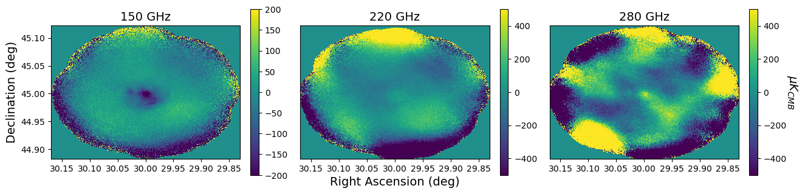
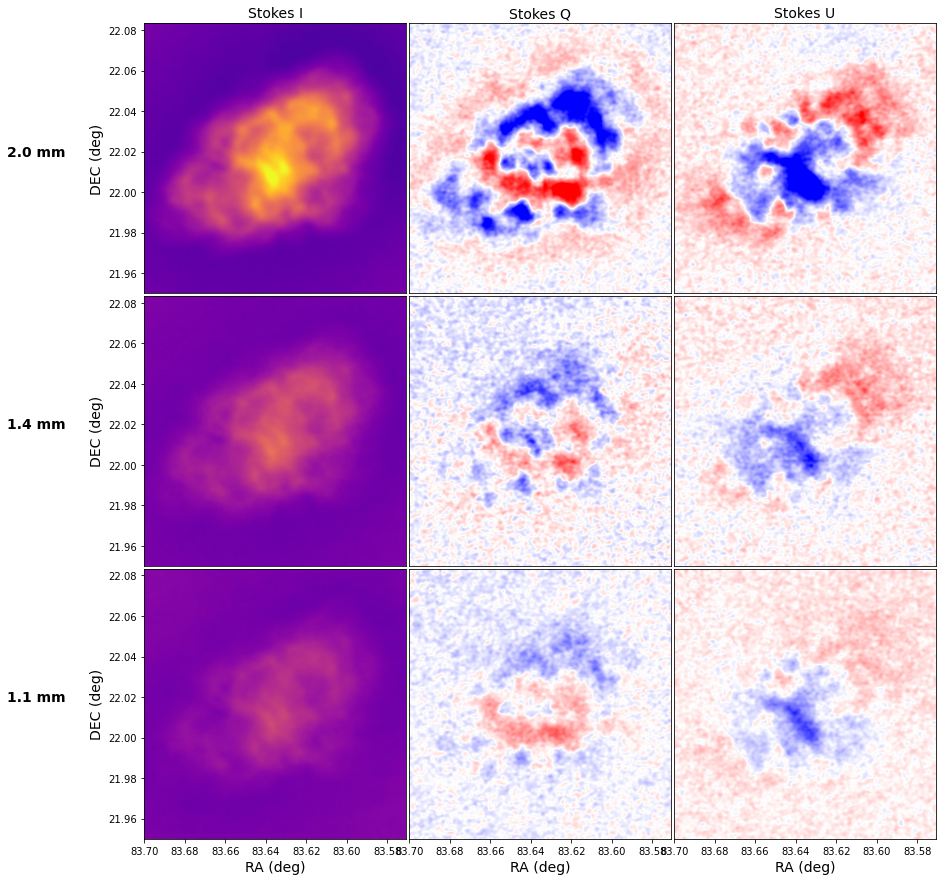
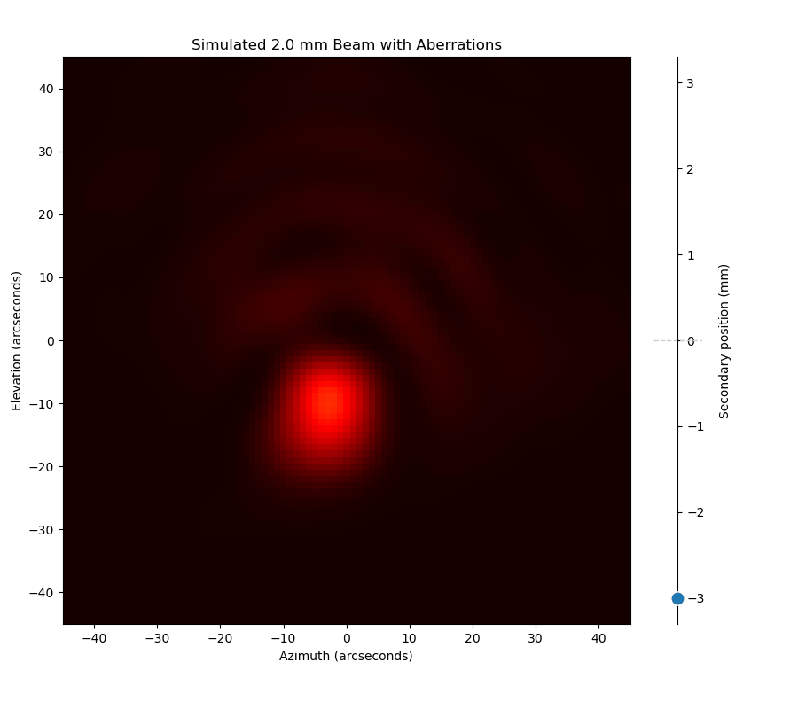
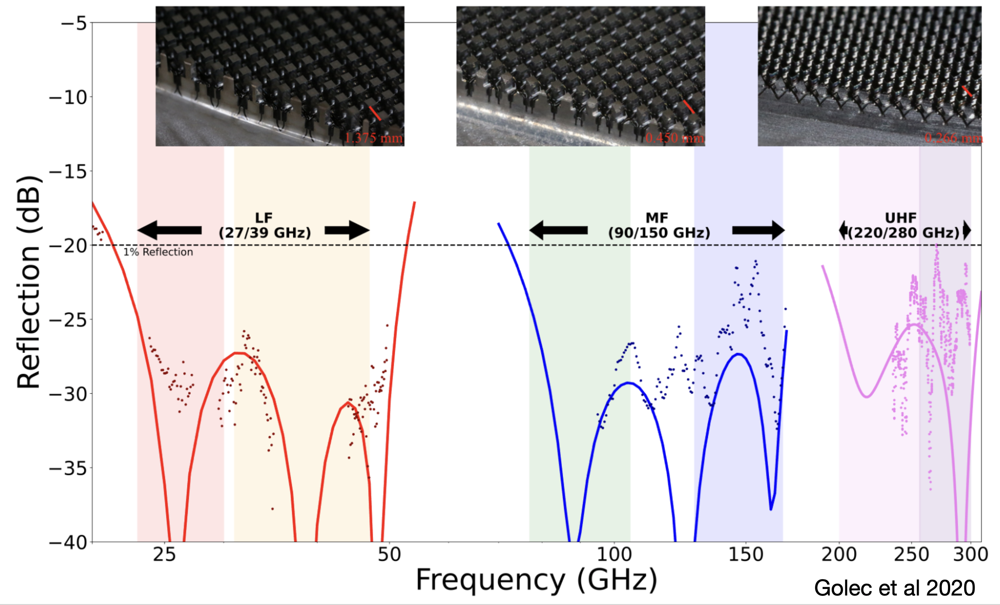
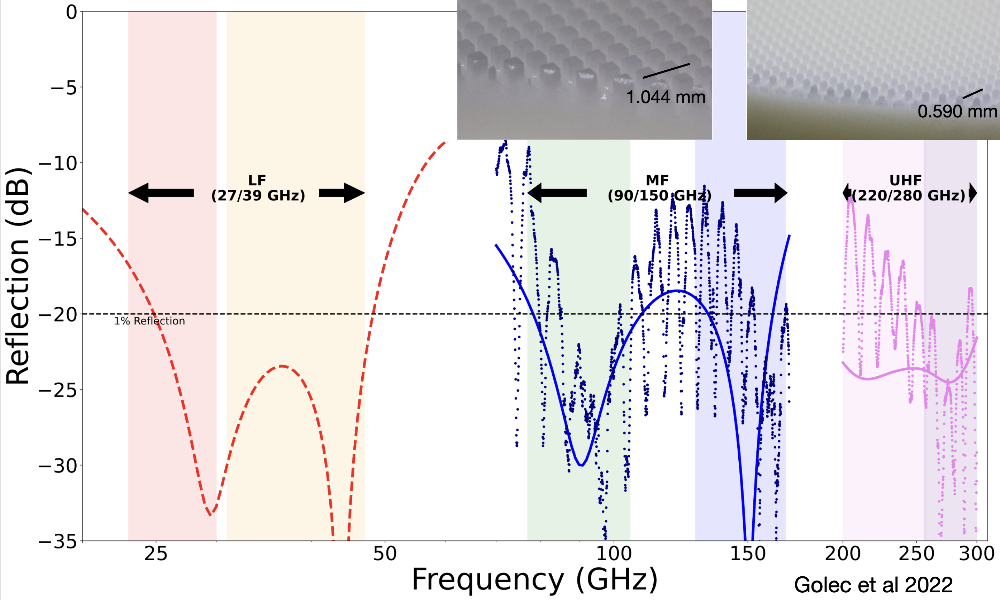

Research
Measuring the Intracluster Medium with the Sunyaev-Zel'dovich Effect

Galaxy clusters are the most massive gravitationally bound objects in the universe, containing hundreds to thousands of galaxies embedded in vast reservoirs of hot gas and dark matter. Their formation and evolution make them powerful probes of cosmology, while observations of merging clusters provide unique opportunities to study the nature of dark matter and the complex physical processes that shape these enormous systems.
My research focuses on understanding the intracluster medium (ICM), the diffuse, extremely hot gas that fills the space between galaxies within a cluster. I study this gas through the Sunyaev-Zel'dovich (SZ) effect, in which interactions between the cosmic microwave background (CMB) photons and electrons in the ICM leave subtle imprints on the CMB. These measurements allow us to investigate the pressure, motions, and distribution of gas within galaxy clusters, revealing the energetic processes that drive their evolution.
Using the TolTEC camera on the 50-meter Large Millimeter Telescope, I am interested in imaging the clusters using the SZ effect at angular resolutions that haven't been achieved before. TolTEC's sensitivity at three millimeter wavelengths allows us to probe the fine structure of the ICM, opening a new window into the physics of galaxy clusters. By resolving features such as shock fronts, pressure fluctuations, and disturbances produced by merging clusters and active galactic nuclei, my research aims to uncover how energy is transferred and redistributed throughout these enormous cosmic environments.
High-resolution Single-Dish Millimeter Imaging with TolTEC

The TolTEC camera is a trichroic polarimeter on the 50-meter Large Millimeter Telescope (LMT), located at an altitude of 4,600 meters on Sierra Negra in Mexico. TolTEC observes simultaneously in three photometric bands centered at 1.1, 1.4, and 2.0 mm, with respective angular resolutions of 5, 6, and 10 arcseconds. Featuring over 7,000 microwave kinetic inductance detectors (MKIDs), TolTEC's exceptional mapping speed and angular resolution make it a powerful instrument for studying a wide range of astrophysical phenomena, including polarized dust emission from star-forming regions in the Milky Way, distant dusty star-forming galaxies, and the hot gas within galaxy clusters through the Sunyaev-Zel'dovich effect.
One of my primary research interests is developing data analysis techniques that maximize the scientific information recovered from TolTEC observations. Ground-based millimeter-wave imaging presents unique challenges, as emission from Earth's atmosphere and correlated detector noise can overwhelm faint astronomical signals. Removing these contaminants can also inadvertently suppress extended astrophysical emission. I am particularly interested in maximum-likelihood mapmaking techniques that separate astronomical signals from instrumental and atmospheric noise while preserving emission across a broad range of angular scales. The figure of the Crab Nebula to the left demonstrates TolTEC's ability to recover extended polarized synchrotron emission from this supernova remnant in both total intensity and polarization.
Optical Modeling of Large Aperture Mirror Surface Errors

Large primary mirrors, like the one on the 50-meter LMT, are susceptible to large scale surface deformations due to temperature gradients, wind, gravity, and other factors. Those deformations cause optical path differences across the aperture which in turn cause a reduction in aperture efficiency and an aberrated far-field beam. As part of the commissioning and characterization of TolTEC on the LMT I developed out-of-focus holography techniques to measure optical aberrations and correct deformations of the LMT's primary mirror, improving the telescope's sensitivity and image quality.
Metamaterial Anti-Reflection Coatings for Millimeter-wave Optics


Modern millimeter-wave telescopes rely on highly transmissive optical elements to detect faint astronomical signals. However, reflections from the surfaces of lenses and filters can reduce optical efficiency and introduce undesirable effects such as ghosting. Traditional laminated anti-reflection (AR) coatings can suffer from mismatches in thermal contraction with the silicon and alumina substrates commonly used in cryogenic millimeter-wave instruments, potentially compromising their performance and reliability.
During my graduate research in the McMahon Lab, I built upon previous work to design and fabricate metamaterial anti-reflection coatings for the Simons Observatory and other millimeter-wave observatories. Rather than applying additional materials to an optical surface, these coatings use precisely engineered subwavelength structures machined directly into the substrate to create an effective refractive index that behaves like a traditional laminate AR coating. This approach eliminates the need for dissimilar coating materials while enabling excellent broadband optical performance. The coatings I developed achieve reflections below 1% in some cases over an octave of bandwidth, helping maximize the sensitivity of modern millimeter-wave telescopes.
My broader research interests extend beyond conventional AR coatings to the development of metamaterial-based optical components that manipulate the transmission and polarization of millimeter-wave radiation. I am particularly interested in exploring broadband polarization modulators, silicon-based infrared-blocking filters, and free-space bandpass filters. By engineering the geometry of subwavelength structures, it may be possible to integrate increasingly sophisticated optical functionality directly into telescope components. I see these technologies as promising avenues for developing the next generation of sensitive, broadband millimeter-wave instrumentation.